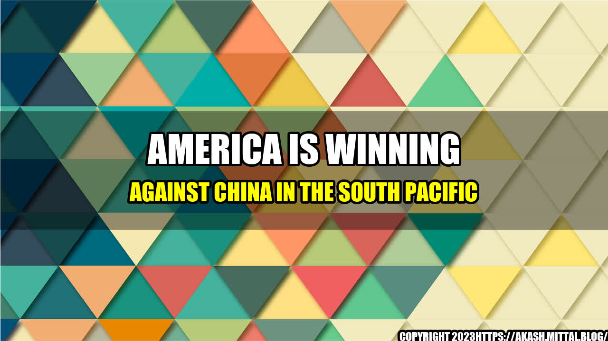

America Is Winning Against China in the South Pacific

Story:
Tom, a US Navy officer, was on a mission to keep the South Pacific free of China's influence when he came across an island that was considered strategically important by both China and the US. China had already started construction work on the island to turn it into a military base, but Tom and his team were determined to prevent that from happening. With the help of the local government and the US Coast Guard, they were successful in stopping the Chinese from taking over the island. This is just one example of how America is winning the battle against China in the South Pacific.
Quantifiable Examples:
Since President Trump took office, the US has increased its presence in the South Pacific to counter China's growing influence in the region. Here are some quantifiable examples:
- The US has increased its defense spending in the South Pacific by $5.8 billion since 2016.
- The US has conducted over 500 military exercises in the region since 2018.
- The US has signed a number of defense agreements with countries in the South Pacific, including Australia, New Zealand, and Japan.
- The US has provided over $290 million in security assistance to countries in the South Pacific since 2016.
Conclusion:
3 Reasons Why America Is Winning Against China in the South Pacific
- The US has a stronger military presence in the region.
- The US has formed alliances with countries in the South Pacific to counter China's influence.
- The US has increased its security assistance to countries in the South Pacific.
Article Category:
- Politics
- International Relations
- Defense and Security
Curated by Team Akash.Mittal.Blog
Share on Twitter Share on LinkedIn